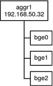
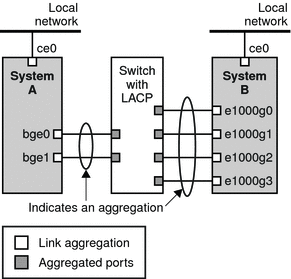
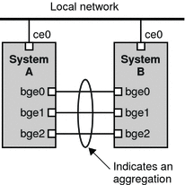

|
|||
|
1. Solaris TCPIP Protocol Suite (Overview) 2. Planning an IPv4 Addressing Scheme (Tasks 3. Planning an IPv6 Addressing Scheme (Overview) 4. Planning an IPv6 Network (Tasks) 5. Configuring TCP/IP Network Services and IPv4 Addressing (Tasks) 6. Administering Network Interfaces (Tasks) Interface Administration (Task Map) Basics for Administering Physical Interfaces Administering Individual Network Interfaces How to Obtain Interface Status How to Configure a Physical Interface After System Installation How to Remove a Physical Interface SPARC: How to Ensure That the MAC Address of an Interface Is Unique Administering Virtual Local Area Networks Administering Link Aggregations How to Create a Link Aggregation Configuring and Communicating Over WiFi Interfaces How to Connect to a WiFi Network 7. Enabling IPv6 on a Network (Tasks) 8. Administering a TCP/IP Network (Tasks) 9. Troubleshooting Network Problems (Tasks) 10. TCP/IP and IPv4 in Depth (Reference) 12. About Solaris DHCP (Overview) 13. Planning for DHCP Service (Tasks) 14. Configuring the DHCP Service (Tasks) 15. Administering DHCP (Tasks) 16. Configuring and Administering DHCP Clients 17. Troubleshooting DHCP (Reference) 18. DHCP Commands and Files (Reference) 19. IP Security Architecture (Overview) 21. IP Security Architecture (Reference) 22. Internet Key Exchange (Overview) 24. Internet Key Exchange (Reference) 25. Solaris IP Filter (Overview) 28. Administering Mobile IP (Tasks) 29. Mobile IP Files and Commands (Reference) 30. Introducing IPMP (Overview) 31. Administering IPMP (Tasks) Part VI IP Quality of Service (IPQoS) 32. Introducing IPQoS (Overview) 33. Planning for an IPQoS-Enabled Network (Tasks) 34. Creating the IPQoS Configuration File (Tasks) 35. Starting and Maintaining IPQoS (Tasks) 36. Using Flow Accounting and Statistics Gathering (Tasks) |
Administering Link AggregationsThe Solaris OS supports the organization of network interfaces into link aggregations. A link aggregation consists of several interfaces on a system that are configured together as a single, logical unit. Link aggregation, also referred to as trunking, is defined in the IEEE 802.3ad Link Aggregation Standard. The IEEE 802.3ad Link Aggregation Standard provides a method to combine the capacity of multiple full-duplex Ethernet links into a single logical link. This link aggregation group is then treated as though it were, in fact, a single link. The following are features of link aggregations:
Link Aggregation BasicsThe basic link aggregation topology involves a single aggregation that is composed of a set of physical interfaces. You might use the basic link aggregation in the following situations:
Figure 6-3 shows an aggregation for a server that hosts a popular web site. The site requires increased bandwidth for query traffic between Internet customers and the site's database server. For security purposes, the existence of the individual interfaces on the server must be hidden from external applications. The solution is the aggregation aggr1 with the IP address 192.168.50.32. This aggregation consists of three interfaces,bge0–2. These interfaces are dedicated to sending out traffic in response to customer queries. The outgoing address on packet traffic from all the interfaces is the IP address of aggr1, 192.168.50.32. Figure 6-3 Basic Link Aggregation TopologyFigure 6-4 depicts a local network with two systems, each of which has an aggregation configured. The two systems are connected by a switch. If you need to run an aggregation through a switch, that switch must support aggregation technology. This type of configuration is particularly useful for high availability and redundant systems. In the figure, System A has an aggregation that consists of two interfaces, bge0 and bge1. These interfaces are connected to the switch through aggregated ports. System B has an aggregation of four interfaces, e1000g0 throughe100g3. These interfaces are also connected to aggregated ports on the switch. Figure 6-4 Aggregation Topology With SwitchBack-to-Back Link AggregationsThe back-to-back link aggregation topology involves two separate systems that are cabled directly to each other, as shown in the following figure. The systems run parallel aggregations. Figure 6-5 Basic Back-to-Back Aggregation TopologyIn this example, device bge0 on System A is directly linked to bge0 on System B, and so on. In this way, Systems A and B can support redundancy and high availability, as well as high-speed communications between both servers. Each server also has interface ce0 configured for traffic flow with the local network. The most common application for back-to-back aggregations is mirrored database servers. Both servers need to be updated together and therefore require significant bandwidth, high-speed traffic flow, and reliability. Data centers are the most common users of back-to-back link aggregations. Policies and Load BalancingIf you plan to use a link aggregation, consider defining a policy for outgoing traffic. This policy specifies how you want packets to be distributed across the available links of an aggregation, thus establishing load balancing. The following are the possible layer specifiers and their significance for the aggregation policy:
Any combination of these policies is also valid. The default policy is L4. For more information, refer to the dladm(1M) man page. Aggregation Mode and SwitchesIf your aggregation topology involves connection through a switch, you must note whether the switch supports link aggregation control protocol (LACP). If the switch supports LACP, you must configure LACP for the switch and the aggregation. However, you can define one of the following modes in which LACP is to operate:
See the dladm(1M) man page and the switch manufacturer's documentation for syntax information. Requirements for AggregationsYour aggregation configuration is bound by the following requirements:
How to Create a Link AggregationBefore You BeginNote - Link aggregation only works on full-duplex, point-to-point links that operate at identical speeds. Make sure that the interfaces in your aggregation conform to this requirement. If you are using a switch in your aggregation topology, make sure that you have done the following on the switch:
This example shows the commands that are used to create a link aggregation with two devices, bge0 and bge1, and the resulting output. # dladm show-link
ce0 type: legacy mtu: 1500 device: ce0
ce1 type: legacy mtu: 1500 device: ce1
bge0 type: non-vlan mtu: 1500 device: bge0
bge1 type: non-vlan mtu: 1500 device: bge1
bge2 type: non-vlan mtu: 1500 device: bge2
# ifconfig -a
lo0: flags=2001000849 <UP,LOOPBACK,RUNNING,MULTICAST,IPv4,VIRTUAL> mtu 8232 index 1
inet 127.0.0.1 netmask ff000000
ce0: flags=1000843 <UP,BROADCAST,RUNNING,MULTICAST,IPv4> mtu 1500 index 2
inet 192.168.84.253 netmask ffffff00 broadcast 192.168.84.255
ether 0:3:ba:7:84:5e
# dladm create-aggr -d bge0 -d bge1 1
# ifconfig aggr1 plumb 192.168.84.14 up
# dladm show-aggr
key: 1 (0x0001) policy: L4 address: 0:3:ba:7:84:5e (auto)
device address speed duplex link state
bge0 0:3:ba:7:84:5e 1000 Mbps full up attached
bge1 0:3:ba:7:84:5e 0 Mbps unknown down standby
# ifconfig -a
lo0: flags=2001000849 <UP,LOOPBACK,RUNNING,MULTICAST,IPv4,VIRTUAL> mtu 8232 index 1
inet 127.0.0.1 netmask ff000000
ce0: flags=1000843 <UP,BROADCAST,RUNNING,MULTICAST,IPv4> mtu 1500 index 2
inet 192.168.84.253 netmask ffffff00 broadcast 192.168.84.255
ether 0:3:ba:7:84:5e
aggr1: flags=1000843 <UP,BROADCAST,RUNNING,MULTICAST,IPv4> mtu 1500 index 3
inet 192.168.84.14 netmask ff000000 broadcast 192.255.255.255
ether 0:3:ba:7:84:5e Note that the two interfaces that were used for the aggregation were not previously plumbed by ifconfig. How to Modify an AggregationThis procedure shows how to make the following changes to an aggregation definition:
This example shows how to modify the policy of aggregation aggr1 to L2 and then turn on active LACP mode. # dladm modify-aggr -P L2 1
# dladm modify-aggr -l active -t short 1
# dladm show-aggr
key: 1 (0x0001) policy: L2 address: 0:3:ba:7:84:5e (auto)
device address speed duplex link state
bge0 0:3:ba:7:84:5e 1000 Mbps full up attached
bge1 0:3:ba:7:84:5e 0 Mbps unknown down standby
How to Remove an Interface From an Aggregation
This example shows how to remove the interfaces of the aggregation aggr1. # dladm show-aggr
key: 1 (0x0001) policy: L2 address: 0:3:ba:7:84:5e (auto)
device address speed duplex link state
bge0 0:3:ba:7:84:5e 1000 Mbps full up attached
bge1 0:3:ba:7:84:5e 0 Mbps unknown down standby
# dladm remove-aggr -d bge1 1
# dladm show-aggr
key: 1 (0x0001) policy: L2 address: 0:3:ba:7:84:5e (auto)
device address speed duplex link state
bge0 0:3:ba:7:84:5e 1000 Mbps full up attached
How to Delete an Aggregation
This example shows how to remove the aggregation aggr1. # dladm show-aggr
key: 1 (0x0001) policy: L2 address: 0:3:ba:7:84:5e (auto)
device address speed duplex link state
# dladm remove-aggr -d bge0 1
|
||
|